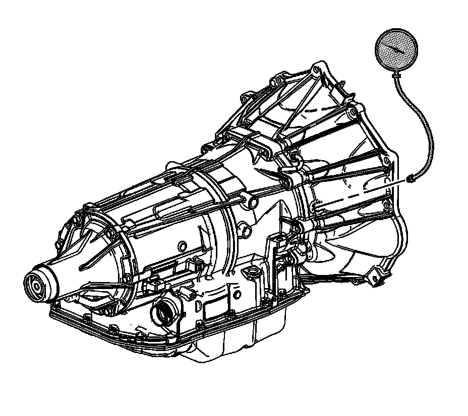

Line Pressure Check
Line Pressure Check
Line Pressure Check:

Tools Required
J 21867 Pressure Gage
Caution: Keep the brakes applied at all times in order to prevent unexpected vehicle motion. Personal injury may result if the vehicle moves unexpectedly.
1. Install a scan tool.
2. Start the engine.
3. Inspect the transmission for the proper fluid level. Refer to Transmission Fluid Checking. Transmission Fluid Check
4. Use the scan tool to inspect for any active or stored diagnostic trouble codes.
5. Inspect the manual linkage at the transmission for proper function.
6. Turn the engine OFF.
Important: You may need to remove or disconnect components in order to gain access to the transmission line pressure test hole plug.
7. Remove the line pressure test hole plug.
8. Install the J 21867.
9. Access the Scan Tool Transmission Output Controls for the Line PC Solenoid.
10. Start the engine.
Important: In order to achieve accurate line pressure readings, the following procedure must be performed at least three times in order to gather uniform pressure readings.
The scan tool is only able to control the line PC solenoid in PARK and NEUTRAL with engine speeds below 1500 RPM. This protects the clutches from extreme high or low line pressures.
11. Use the scan tool to increase and decrease the Line PC Solenoid in increments of approximately 100 KPa (15 psi). The scan tool commands the increment values automatically.
12. Allow the pressure to stabilize between increments.
13. Compare your pressure readings on the scan tool to those indicated on the J 21867.
14. If the pressure readings vary greatly, refer to Fluid Pressure High or Low. Fluid Pressure High or Low
15. Turn the engine OFF.
16. Remove the J 21867.
Notice: Refer to Fastener Notice.
17. Install the line pressure test hole plug.
Tighten the pressure plug to 11 N.m (97 lb in).